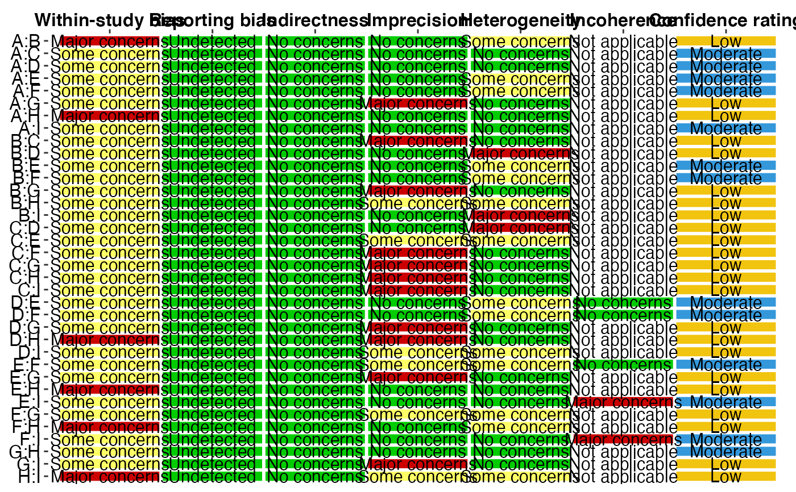

To plot GRADE result.
GRADE_plot( RESULT, font.size, lab.size, font.family = c("Helvetica", "Times New Roman") )
| RESULT | GRADE matrix result |
|---|---|
| font.size | font size |
| lab.size | text size |
| font.family | "Helvetica" or "Times New Roman" |
ggplot object
LDT1 <- read.csv(system.file("extdata", "HR_SH_D.csv", package = "net.meta")) trt1 <- read.table(system.file("extdata", "HR_SH_D.txt", package = "net.meta"), header=TRUE,quote = '"', stringsAsFactors=FALSE) trt1$description <- factor(trt1$description, trt1$description) LDT1$study <- factor(LDT1$study, unique(LDT1$study)) bmt1 <- model_gemtc( long.data=LDT1, id.treatments=trt1, reference="A", outcome="HR", mtc.n.adapt = 5000, mtc.n.iter = 10000, mtc.thin = 20)#> Compiling model graph #> Resolving undeclared variables #> Allocating nodes #> Graph information: #> Observed stochastic nodes: 34 #> Unobserved stochastic nodes: 43 #> Total graph size: 642 #> #> Initializing model #>nmt1 <- model_netmeta(long.data = LDT1, treatment=LDT1$treatment, id.treatments = trt1, reference = "A", outcome = "HR") name1 <- NULL for(i in 1:(length(trt1$id)-1)){ name1 <- c(name1, paste0(trt1$id[i], ":", trt1$id[-(1:i)])) } study.CM1 <- studyCM_matrix(name1, nmt1) study.assess1 <- read.csv(system.file("extdata", "HR_SH_A.csv", package = "net.meta")) RB.comp1 <- rep(0, nrow(study.CM1)) #1 Yes, 0 no RESULT.B1 <- GRADE_table( study.CM1, bmt1, nmt1, rob=study.assess1$ROB, ## define Rob per study ind=study.assess1$IND, ## define Indirectness per study report.bias=RB.comp1, effect.size = "ratio", clinical.effect.size=1.25, model="Bayes")#> Compiling model graph #> Resolving undeclared variables #> Allocating nodes #> Graph information: #> Observed stochastic nodes: 34 #> Unobserved stochastic nodes: 44 #> Total graph size: 856 #> #> Initializing model #> #> Compiling model graph #> Resolving undeclared variables #> Allocating nodes #> Graph information: #> Observed stochastic nodes: 34 #> Unobserved stochastic nodes: 44 #> Total graph size: 856 #> #> Initializing model #> #> Compiling model graph #> Resolving undeclared variables #> Allocating nodes #> Graph information: #> Observed stochastic nodes: 34 #> Unobserved stochastic nodes: 44 #> Total graph size: 856 #> #> Initializing model #> #> Compiling model graph #> Resolving undeclared variables #> Allocating nodes #> Graph information: #> Observed stochastic nodes: 34 #> Unobserved stochastic nodes: 44 #> Total graph size: 856 #> #> Initializing model #> #> Compiling model graph #> Resolving undeclared variables #> Allocating nodes #> Graph information: #> Observed stochastic nodes: 34 #> Unobserved stochastic nodes: 44 #> Total graph size: 856 #> #> Initializing model #> #> Compiling model graph #> Resolving undeclared variables #> Allocating nodes #> Graph information: #> Observed stochastic nodes: 34 #> Unobserved stochastic nodes: 43 #> Total graph size: 642 #> #> Initializing model #>GRADE_plot(RESULT.B1, font.size=4, lab.size=12, font.family="Helvetica")